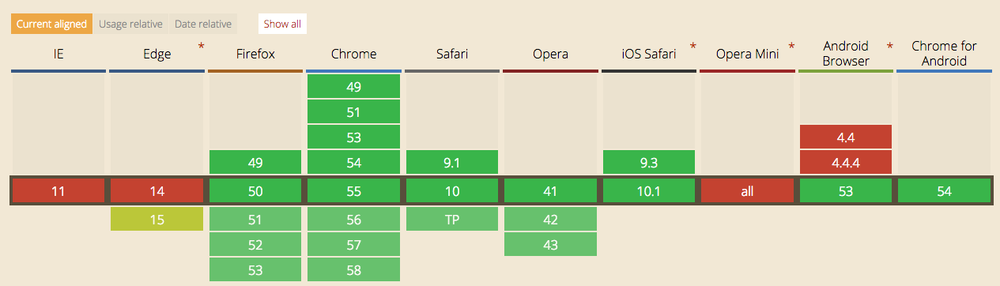

Кастомные свойства в css
Alexey Khlebaev
Кастомные свойства
Какие проблемы решают:
- Уменьшение количества повторяющегося кода в CSS
- Гибкость и управляемость кода
- Cоздание впечатляющих эффектов (смены тем на лету) - !
- Название содержит семантическую информацию
Кастомные свойства
Поддержка

Кастомные свойства
:root {
--main-bg-color: brown;
}
body {
background-color: var(--main-bg-color);
}
Кастомные свойства. Js
var styles = getComputedStyle(document.documentElement);
var value = String(styles.getPropertyValue('--primary-color')).trim();
styles.setProperty('--primary-color', 'green');
Кастомные свойства. Первые впечатления

Все круто, но
- Что за уродливый синтаксис?
- В Sass уже есть переменные
$foo
- Допустимая лексема CSS.
--variable: value.- Fallback.
Отличия от переменных в препроцессорах
- Переменные препроцессоров — исчезают при сборке.
- CSS-переменные:
- работают в runtime, доступны для чтения/изменения;
- живут в DOM'е, ограничены скоупом узла, наследуются до последнего потомка;
- учитывают каскад!
@media запросы
Stylus
gutter = 5px;
@media (min-width: 100px) {
gutter = 20px;
}
.Container {
padding = gutter;
}
.Container {
padding: 5px;
}
@media запросы
Css переменные
:root {
--gutter: 5px;
}
@media (min-width: 100px) {
--gutter: 20px;
}
.Container {
padding: var(--gutter);
}
Что не могут препроцесорные переменные.
Stylus
titleColor = #fff;
.title {
titleColor = #000
}
.sideBar .title {
color: --titleColor
}
.sideBar .title {
color: #fff;
}
Что не могут препроцесорные переменные.
Css переменные
:root {
--titleColor: red;
}
.title {
color: var(--titleColor);
}
.sideBar {
--titleColor: blue;
}
Яндекс. Главная страница поиска
Для чего используются css переменные
- Эксперементы
- Контроль над цветом
- Возможность изменять константы менеджерам
Рекомендации
:rootvar(--property, fallback)@supports--property-calcinitial
@apply
- Аналог миксина
- Позволяет подключать набор свойств
- Синтаксис как у кастомных свойств, только с "{ }"
Выводы
- Фичи из препроцессоров внедряются в CSS
- Css переменные - мощный инструмент!
- Не надо бояться использовать CSS переменные
Ссылки
- http://frontender.info/css-variables-why-should-you-care/
- http://philipwalton.com/articles/why-im-excited-about-native-css-variables/
- https://blog.gospodarets.com/css_properties_in_depth
- https://tabatkins.github.io/specs/css-apply-rule/
- https://blog.gospodarets.com/css_apply_rule?utm_source=CSS-Weekly&utm_campaign=Issue-211&utm_medium=email
Fork me on GitHub